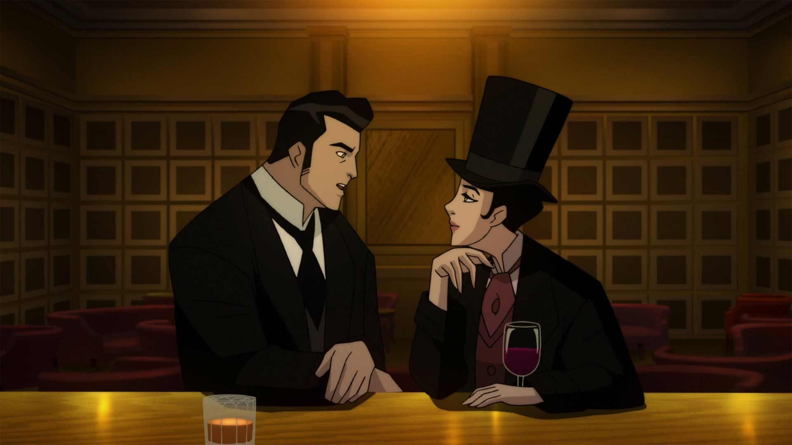

(continued from Part 1 of this post)'Batman – Return of the Caped Crusaders' (2016) is actually quite recent, despite being an adaption of Adam West’s 1960’s television version of the character. It’s lovingly produced too, with a distinct style to match the tone of that series (although still using low-budget animation), and bringing back the original actors (Adam West, Burt Ward, and Julie Newmar as Batman, Robin and Catwoman). As expected, it’s stupidly cheesy and silly with its gags and puns, and even if you aren’t a fan of this version of Batman, it’ll be refreshing compared to everything else in this collection. It does drag on though, about twice as long as it should have been. 2.9 / 5.0. 'Batman – The Killing Joke' (2016) is controversial, both because of the original infamous graphic novel, and because of how it was adapted into this film. The biggest change is Batgirl’s role, filling up the first 30 minutes of the movie before a single page of the source material begins. We see Barbara dealing with several types of misogyny, be it from villains, friends, or even an over-controlling Batman, while also seeing her start a sexual relationship with him (something vaguely hinted at in much earlier animated films from this collection). I’m not fully decided on this characterization (it’s almost worth a full-length review to discuss this alone), but I admit this version of a conflicted Batgirl was more believably real than any other character in this cartoon collection (and inspiringly strong and mature by the time the movie is done). Then of course, there’s the Joker committing a brutal and personal attack, in a way we’ve never seen him before, and the writing again is more riveting than the other movies. Sure, the barely-good-enough-for-tv-budget is a far cry from the beauty of the comic, and the killer ending just isn’t as chilling in the way it’s edited here, but on the other hand… this new Joker design looks even creepier than the comic did. And the voice acting (bringing back Kevin Conroy, Mark Hamill, and Tara Strong) is at its franchise-best. Animation quality aside, the team clearly TRIED with this one, and with several teases of Batgirl in the other movies, it’s as if they were all leading to this being part of the animated canon – it helped to marathon the other movies before watching. In short: not great compared to the original comic, but pretty great compared to the other animated works. 3.5 / 5.0. 'Batman and Harley Quinn' (2017) finds a retired, on-the-straight-and-narrow Harley being forced to costume up and help Batman and Nightwing to stop a plot by Poison Ivy. This is the funniest movie in the collection for me, and it shines a unique light on Harley that helped me appreciate her more, while also staying true to her early 90’s incarnation. Animation feels a lot like the late-90’s style, cleaned up a bit, but still with plenty of editing mistakes. I’m not sure how I feel about Warner Bros.’s determination to market Harley’s sex-drive, no doubt to the excitement of certain fans… this is the second film in the collection to feature her hooking up under the sheets as a fling. Regardless, this is a fun, unambitious movie for adult fans. 3.2 / 5.0. 'Batman – Gotham by Gaslight' (2018) is an adaptation of an 'elseworlds' graphic novel; these are stories that aren’t restricted by the ongoing comic canon, allowing the writers carte-blanche on the characterizations and setting. In this case, Bruce Wayne is a Victorian-era aristocrat, and suits up as an analogue-version of Batman to investigate the crimes of Jack the Ripper. It’s familiar, yet different, and refreshing, especially if you like this particular setting. Many Batman characters appear in cameos, either by name, face or voice, but most are very different from how you know them, which is part of the fun (you won’t believe the reveal of who Jack is). The story isn’t kind to women (this is the point to Jack’s crimes after all), but a strong Selina Kyle helps balance that a bit. Even though the animation is weak, nearly all the visual assets here are unique to this one movie, and had to be created from scratch; credit is due for the amount of work, and for decently-good looking environments. Even though this isn’t as engaging as some of the other movies, it’s fun and unique enough to be worthwhile. 3.1 / 5.0.  'Batman – Ninja' (2018) is… probably the dumbest pitch in this collection. Primarily animated in CG, it finds an excuse to put Batman and most of his villains and allies back in time in feudal Japan. Japanese directors are quite good at making silly ideas seem serious and epic, and as the film gets sillier and sillier, it still somehow works, finding new ways to be ambitious. The very unique character designs, and great animation (both CG and 2D) and music also help elevate this to be more than just a curiosity. 3.6 / 5.0. Rankings: 'Batman – Gotham Knight' (3.9 / 5.0), 'Batman – Ninja' (3.6 / 5.0), 'Batman – Mask of the Phantasm' (3.5 / 5.0), 'Batman – The Killing Joke' (3.5 / 5.0), 'The Dark Knight Returns – Part 1, Part 2' (3.3 / 5.0), 'Batman – Under The Red Hood' (3.3 / 5.0), 'Batman VS Robin' (3.2 / 5.0), 'Batman and Harley Quinn' (3.2 / 5.0), 'Batman – Assault on Arkham' (3.1 / 5.0), 'Batman – Gotham by Gaslight' (3.1 / 5.0), 'Batman – Return of the Caped Crusaders' (2.9 / 5.0), 'Batman – Mystery of the Batwoman' (2.8 / 5.0), 'Batman – Year One' (2.7 / 3.0), 'Batman – Bad Blood' (2.7 / 5.0), 'Superman / Batman – Public Enemies' (2.6 / 5.0), 'Son of Batman' (2.4 / 5.0), 'Superman / Batman – Apocalypse' (2.0 / 5.0). Conclusion: The visual productions across the board are as bad as expected, with workman-like direction. The storylines are standard for superhero comics: they’re standalone without long-lasting effects, throwaway, but fun if you enjoy the hero or his villains. The vast majority of these movies are only worthwhile if you like Batman. But I DO like Batman, and I think most people do for one reason or another. And when not in a judgmental state of mind, I admit that I didn’t mind these movies as much as I thought I would. Dare I say, they were fun. A few of them even impressed me. More than half of the collection got above a 3.0 / 5.0 from me, which is great! Regardless, the amount of movies and bonus features you get (including several TV episodes from multiple different Batman series on disc) for the price is a steal here, so it’s easy to recommend for any comic-book lover. Notable films missing from the collection: 'Sub-Zero' (1998), a Mr. Freeze film, is a fondly-remembered tv film following the 'Animated Series' art style. 'Batman Beyond – Return of the Joker' (2000) is an effective classic, and will interest fans of Tim Drake’s alternate fate from 'Under the Red Hood' or an older Bruce Wayne like in 'The Dark Knight Returns.' 'Batman – Hush' (2019) and 'Batman – The Long Halloween' (2021) came after this collection released, adapting other classic graphic novels, pairing well with 'Year One,' 'The Dark Knight Returns,' and 'The Killing Joke.'
- "Ani" More reviews can be found at : https://2danicritic.github.io/ Previous review: review_Batman_Ninja Next review: review_Bayonetta_-_Bloody_Fate